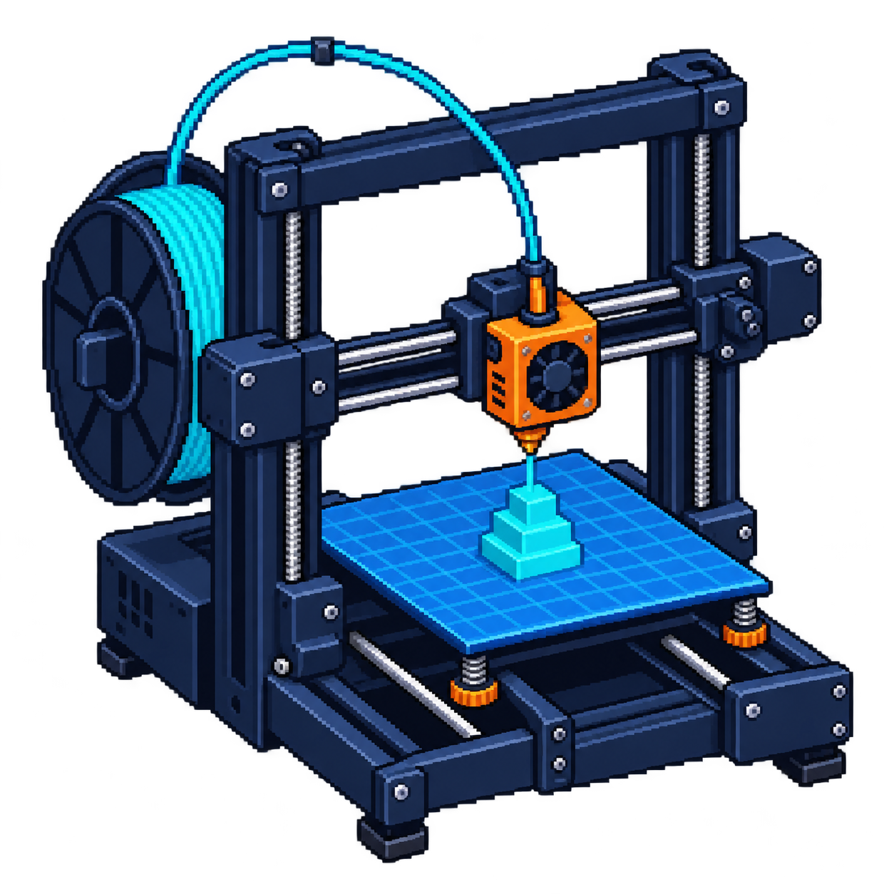

Infill stays inside.
Infill supports top surfaces and changes material use and stiffness. Strength also depends on walls, print orientation, material, and bonding.
Read about infill ↗Take a look inside the process.
Change a setting. See what the printer does.

One continuous object.
Thousands of deliberate moves.
Infill supports top surfaces and changes material use and stiffness. Strength also depends on walls, print orientation, material, and bonding.
Read about infill ↗Supports reach up to overhangs outside the part. A small contact gap helps separation. A bridge anchored at both ends may print without support.
Read about supports ↗